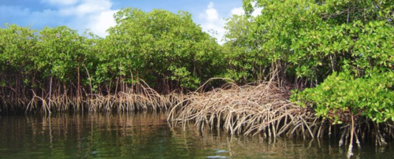
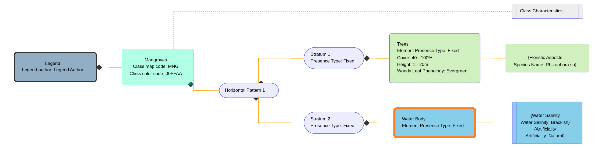

Examples
I. Mangroves
- Class Name: Mangroves
- Class Code: MNG
- Class Description: The mangroves are defined by two distinct strata. The first stratum is woody growth forms with a vegetation cover ranging from 40 to 100 percent. Vegetation height varies between 1 and 20 meters, and the leaf phenological characteristic is evergreen. The floristic aspect of the mangroves comprises of species Rhizophora sp. The second stratum is water, with the coverage ranging from 0 to 100 percent. The water salinity is defined as brackish, and the artificiality is natural.
- Class Images:

Field Photo: Mangroves in the Cross River state, Nigeria.(Source: https://www.environewsnigeria.com/)
LChS Diagram: Mangroves class.
Video: Creating the Mangroves class.